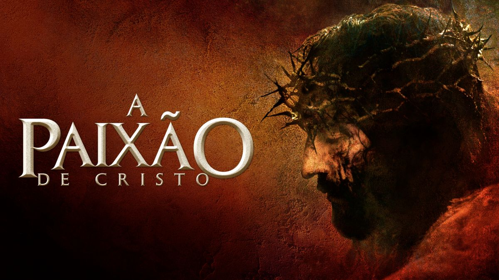

Me chamo Fabícia, mãe de duas princesas de 13 anos. Nascie em Salvador-BA, amante de livros, cactos e suculentas. No momento estou em transição de carreira, pois estava desgastada, não por causa do amor pelo cake design, mas por outros fatores. Deus me deu essa oportunidade de aprender com Vai na Web. Estou amando conhecer o mundo da programação, que faz parte da vida cotidiana. Daqui por diante me desenvolverei mais e mais até alcançar o objtivo que esta sendo construído com a ajuda de Deus e da Vai na Web.
